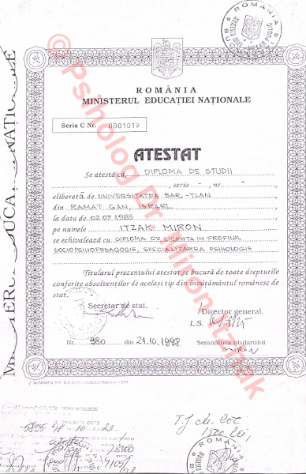
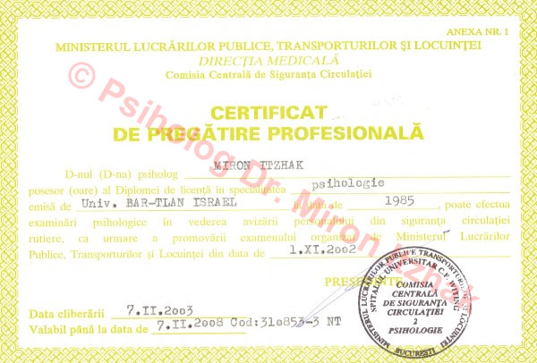
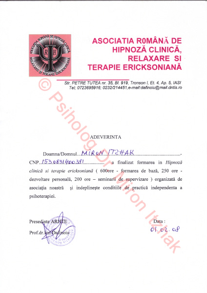
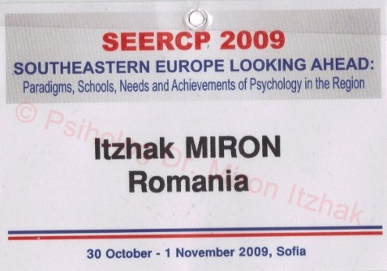

Cabinet psihologic Dr. Miron Itzhak
0233 236 146
0747 627 971
Israel: 00972.58.5183623


De-a lungul carierei sale, Dr. Miron Itzhak a obtinut numeroase certificari si recomandari, care ii atesta inalta sa calificare. De asemenea, el este prezent in dictionarul academic international.
Dr. Miron Itzhak








